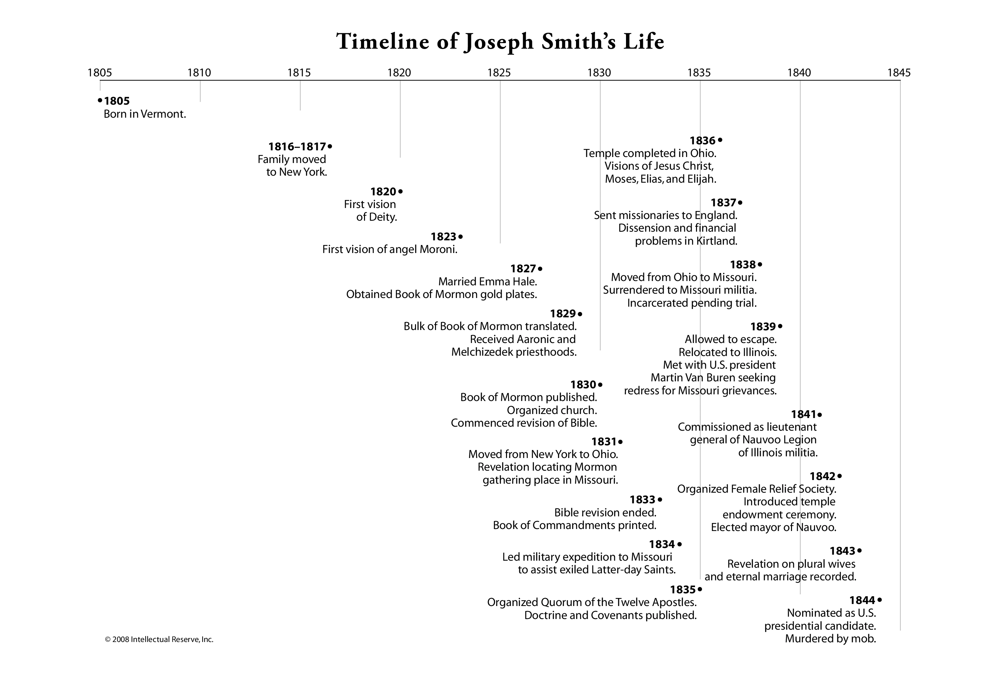

Welcome! This page offers a brief journey through the early years of the Church of Jesus Christ of Latter-day Saints.
From the birth of Joseph Smith, to the Saints’ journey west,
this timeline highlights the sacred events and divine guidance that shaped the Church’s
beginnings.
🧑‍🌾 The Prophet Joseph Smith
1805 – Joseph Smith was born in Sharon, Vermont.
1816–1817 – The Smith family moved to New York.
✨ Divine Beginnings
1820 – First Vision: God the Father and Jesus Christ appeared to Joseph Smith.
1823 – The angel Moroni visited Joseph Smith.
📖 Restoration of Sacred Records
1827 – Joseph received the golden plates and married Emma Hale.
1829 – Translation of the Book of Mormon was completed. The Aaronic and Melchizedek Priesthoods were restored.
🌠A New Church Begins
1830 – The Book of Mormon was published. The Church was officially organized.
🏘️ Gathering of the Saints
1831 – Saints gathered in Kirtland, Ohio. Independence, Missouri designated as Zion.
1833 – Saints were forced to leave Jackson County, Missouri.
⚔️ Trials and Growth
1834 – Zion's Camp marched to assist Saints in Missouri.
1835 – Quorum of the Twelve Apostles and Seventy organized. Doctrine and Covenants published.
1836 – Kirtland Temple was dedicated. Priesthood keys restored.
📜 Persecution and Imprisonment
1837–1838 – Financial troubles in Kirtland. Joseph relocated to Far West, Missouri, and was later imprisoned.
1839 – Joseph escaped and joined the Saints in Nauvoo, Illinois.
🛠Temple and Teachings
1840 – Teaching about baptism for the dead began.
1841 – Joseph appointed as Lieutenant General of the Nauvoo Legion.
1842 – Relief Society organized. Temple endowment introduced.
1843 – Revelation on eternal marriage and plural wives recorded.
⚖️ Final Acts
1844 – Joseph Smith was assassinated. The Quorum of the Twelve led the Church.
🏞️ A New Beginning
1846 – Nauvoo Temple dedicated. Saints began the journey to the Salt Lake Valley.
🙠Why This History Matters
The early years of the Church are a testament to faith, revelation, and resilience. Through trials and triumphs, the Saints laid the foundation for a global Church. Their experiences inspire millions today to seek truth, follow Christ, and build Zion wherever they are.
📚 Further Reading and Study
Timeline from https://www.josephsmithpapers.org:

Sources used for this timeline:
For those interested in learning more about the Church of Jesus Christ of Latter-day Saints, consider exploring the following resources: